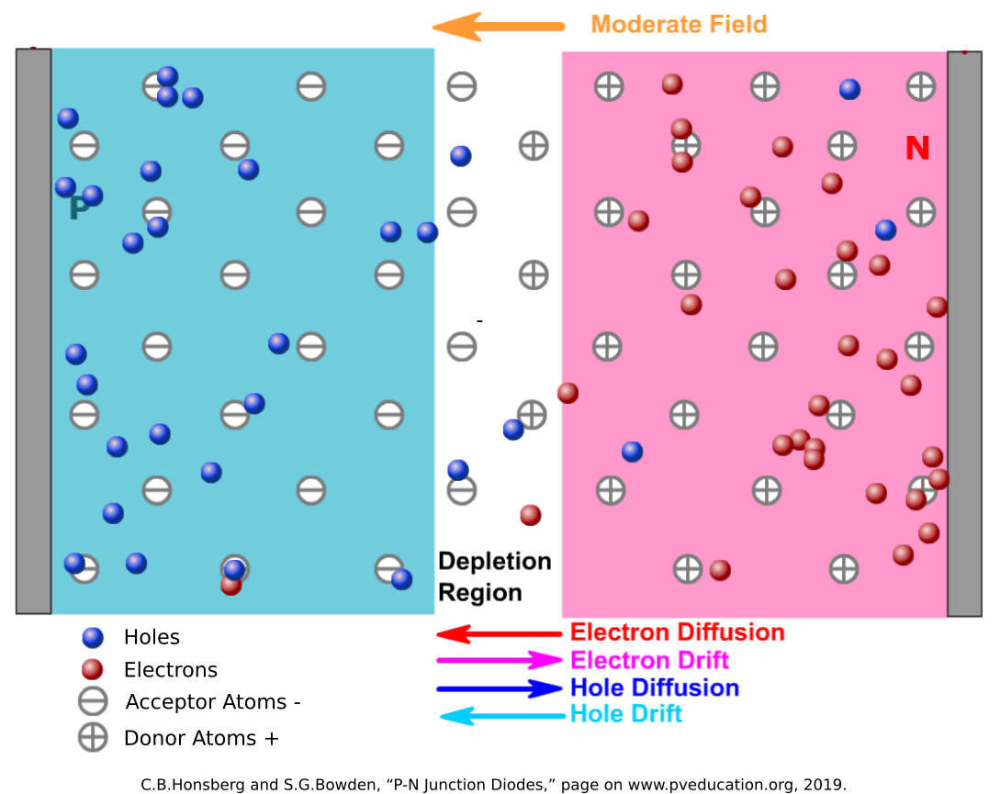
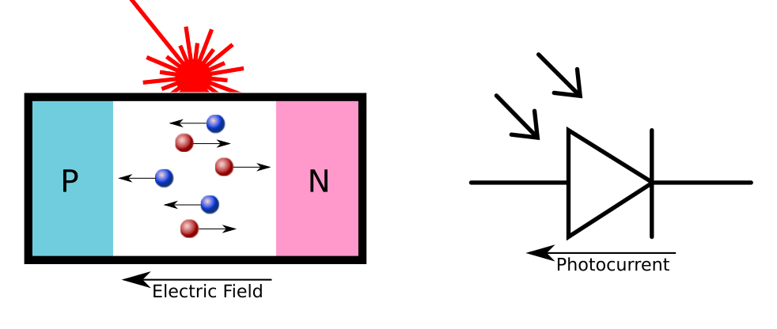
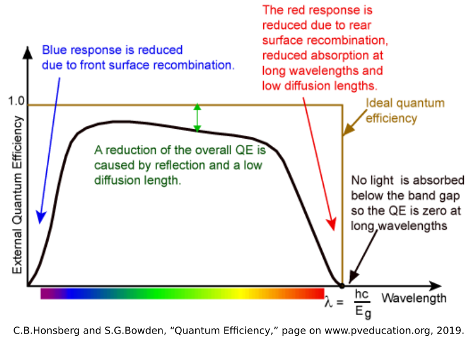

May 15, 2020
7 minute readAs I mentioned in my previous post, some of my recent research experience has been focused on light-based injection attacks. The causality of the laser injection attacks on LiDAR [1] [2] [3] are fairly straightforward, as the LiDAR devices are designed to sense light. In the case of Light Commands [4] , the causality is not as clear. I will be investigating different physical phenomena to develop a model of what is going on. The next phenomenon that I want to look at is the photovoltaic effect.
Most of the information here was found in the literature for solar cell design, the most common use of photovoltaics. In particular, the website pveducation.org [5] gave a wealth of information on the topic, so go there to learn even more.
Like the photoelectric electric effect, the photovoltaic effect occurs light causes electrons within a material to change energy states. In the photoelectric effect, high energy photons cause the electrons to break free from the surface of the material altogether, but in the photovoltaic effect, the electrons only gain enough energy to jump from the valence bands to the conduction bands of a crystalline structure. This adds a negatively-charged electron carrier particle to the structure, and leaves behind a positively-charged carrier particle with the hole left behind. In most materials, the random thermal motions of the electrons means that the electron-hole pairs will recombine quickly, giving off light (as reflections) and generating no current. But there is a special case where it becomes more important: Doped Semiconductors.
Semiconductor technologies have made computers possible, and the fundamental unit of this technology is the P-N junction, often called a diode. In P-N junctions, a semiconductor (usually a group 14 element like silicon) that has no inherent charge is doped with other elements. In P-Type material, it is doped with group 13 elements (such as Boron or Gallium) that have an opening in their valence band that is easily filled by an electron. These “acceptor” atoms capture electrons, leaving an excess of positively charged holes. In N-Type material, it is doped with group 15 elements (such as Phosphorus or Arsenic) that have one loosely-held electron in their valence band. These “donor” atoms lose electrons easily, allowing the negatively-charged particles to move about the crystalline structure in the conduction band.
When the P-Type and N-Type materials are joined at a junction, the electrons in the N-Type material combine with the acceptors in the P-Type, and the holes in the P-Type material get filled by the donors in the N-Type. Since this exchange causes the acceptor atoms to become negatively-charged and the donor atoms to become positively-charged, an electric field is generated at the junction in the direction from the N-Type to the P-Type. The electric field drives out any carrier particles out of the junction, keeping the N-Type electrons from diffusing into the P-Type material, and vice versa.
This built-in electric field is the power of the P-N junction. When a voltage is applied in the same direction of the electric field (from N-Type to P-Type, Cathode to Anode) it just strengthens this electric field barrier and resists current flow like and insulator. When a strong enough voltage is applied in the opposite direction (from P-Type to N-Type, from Anode to Cathode) the built-in electric field is overcome and current flows as if it was a normal conductor.
While this is useful in rectifying AC signals, overvoltage protection, and in transistors, this P-N electric field also enables the photovoltaic effect. As mentioned before, when light hits the silicon material, it causes electrons to jump from the valence band to the conduction band, creating an electron-hole pair. While these electron-hole pairs often recombine, the presence of the electric field makes it much more likely that the electron will drift to the N-Type material, and the holes will drift to the P-Type material. This generates a measureable current.
This current is what might be causing the signal generation in the Light Commands attack, but we need to understand the mathematical relationship between the light and the current being generated.
First, similar to the photoelectric effect, we need to understand at which frequencies of light this effect occurs. The energy required to move an electron from the valence band to the electric band is called the Band Gap ( \(E_g \) ). For silicon at room temperature, the band gap is ~\(1.11 eV \) [6] . From the last post, we know that the energy of a photon is related to its frequency: \[ E = hf \] So, the minimum frequency to cause an electron to jump from the valence band to the conduction band is: \[{ f_0 = \frac{E_{g}}{h} = \frac{1.11eV * 1.602{\times}10^{-19}J/eV}{6.626{\times}10^{-34} J{\cdot}s} \approx 268 THz }\] which means the wavelength is: \[ \lambda = \frac{c}{f_0} \approx 1120 nm \] This wavelength is in the near-infrared spectrum, and all the light frequencies used in the Light Commands attack have enough energy to cross the band gap.
Now that we know that the frequencies we are using can cause the photovoltaic effect, we need to understand the relationship between light and current. I’m used to seeing laser light in terms of optical power ( \(P\) ). For example, class 1 laser pointers that are used in presentations are limited to a max optical power output of \( 5 mW \). In the photovoltaic effect, however, the important parameter is the number of photons striking the P-N junction per unit area per second. This is called the photon flux ( \(\phi\) ). The photon flux can be calculated from the optical power ( \(P\) ), the area of the laser beam ( \(A_B\) ), and the number of photons per unit energy. In monochromatic light, this is \[ \begin{align} & \phi = \frac{P}{A_B} \times \frac{\lambda}{hc} \\\\ & [photons/s/m^2] = \frac{[J/s]}{[m^2]} \times [photon/J] \end{align} \]
Now that we have the photon flux, we can then move to calculate the photocurrent generated. While the photon flux shows how many will strike the surface of the material, only a percentage of those photons will generate a current. This is because the random motions of the electron-hole pairs and crystalline defects in the junction (especially near the surface) will cause electron-hole pairs to recombine rather than drift the the ends of the junction. The ratio of the number of electrons that generate current to the number of photons that hit the junction is called the Quantum Efficiency ( \(\eta_{\lambda}\) ), and is a function of wavelength that is inherent to each P-N Junction.
Since we know the fundamental charge ( \(e=1.602×10^{−19} C \) ) per electron, we can calculate the current density ( \(J_{\phi}\) ) generated by the laser to be: \[ \begin{align} & J_{\phi} = e\eta_{\lambda}\phi \\\\ & [A/m^2] = [C/s/m^2] = [C/electron] \times [electrons/photon] \times [photons/s/m^2] \\\\ & J_{\phi} = e\eta_{\lambda}\frac{P{\lambda}}{A_Bhc} [A] \end{align} \] Then finally, the photocurrent is simply the current density multiplied by the cross-sectional area of the junction ( \(A_J\) ): \[ \begin{align} & I_{\phi} = J_{\phi} * A_J \\\\ & [A] = [A/m^2] * [m^2] \end{align} \] This brings the final photocurrent equation to: \[ I_{\phi} = \frac{e\eta_{\lambda}}{hc}{\times}\frac{A_J{\lambda}P}{A_B} [A] \]
What this equation tells us is that the current generated by the light is directly proportional to the optical power, which matches the roughly linear relationship between optical power and the signal generated in the Light Commands experiments. It also confirms that the focusing of the beam plays a large part, as the area of the beam is inversely proportional to the current. I will look at this in a future post, as it could mean the optics are even more important the the raw power of the beam.
Another factor is the wavelength. While the quantum efficiency is nonlinear and hard to solve mathematically, it can be approximated as a constant within the wavelengths we are interested in. With this assumption, the photocurrent is also directly proportional to wavelength, meaning that wavelengths inthe red and infrared will perform better than blue. This makes some intuitive sense, as red light contains more photons than blue light of the same optical power. More photons generates more electron-hole pairs, which means more current. The blue light photons have more energy, but that just means more energy gets wasted as light and heat, as you only need to cross that Band Gap of \(1.11eV\).
With this knowledge, we can make a hypothesis that if the photovoltaic effect is the primary cause of the Light Commands effect, then longer wavelengths of light in the red and infrared spectrum (up to the minimum frequency required to cross the band gap) will perform better than blue light at the same optical power density.
There are still some open questions and future work, however. While this describes how diodes will be affected by light, it leaves the question of how this relates to the circuit on the MEMs microphones themselves. To me, these ASICs are black boxes, where I can only presume certain circuit elements such as filters, amplifiers, and oscillators. Transistors are also more complicated, and the photocurrent generated in transistors may be more difficult to model than in diodes. I’ll need to dig deeper into MEMs circuit design to make some hypotheses about which circuit elements would be most vulnerable.